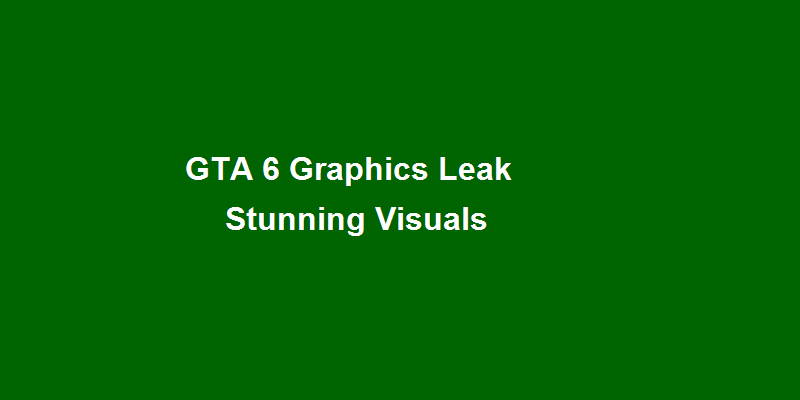

GTA 6 PC Feature Hints: Upscalers, Frame Gen, and A Clearer Mod Policy
Granular settings and solo mod clarity could define the PC experience.
October 5, 2025
0 views
5 min read

Signals To Watch
- DLSS/FSR/XeSS tiers exposed in menus
- Frame generation toggle with latency tips
- Clarified mod stance for single-player only
PC Experience Pillars
- Granular graphics presets per district/time/weather
- Latency-path advice for competitive scenes
- Mod sandbox with clear boundaries away from Online
Community Concerns
- Fairness: frame gen in PvP—disable or flag?
- Anti-cheat collision with solo mods—strict separation
- Port timing: PC parity vs. staged release
What PC feature matters most to you?
- Pick: A. Stability B. Fidelity C. Mod freedom